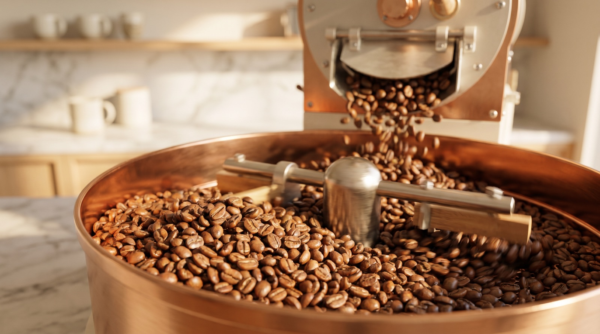
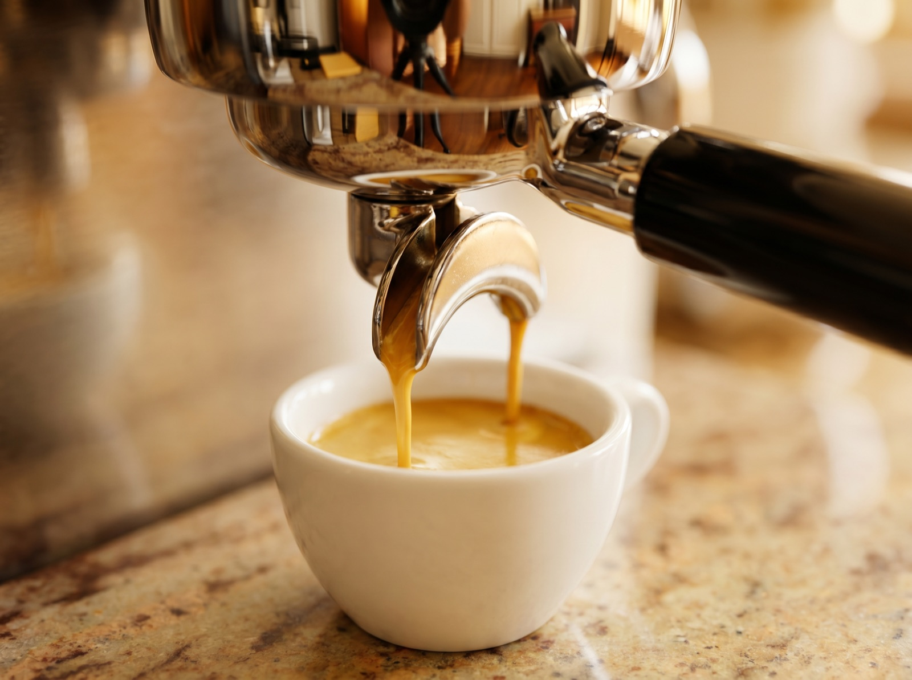
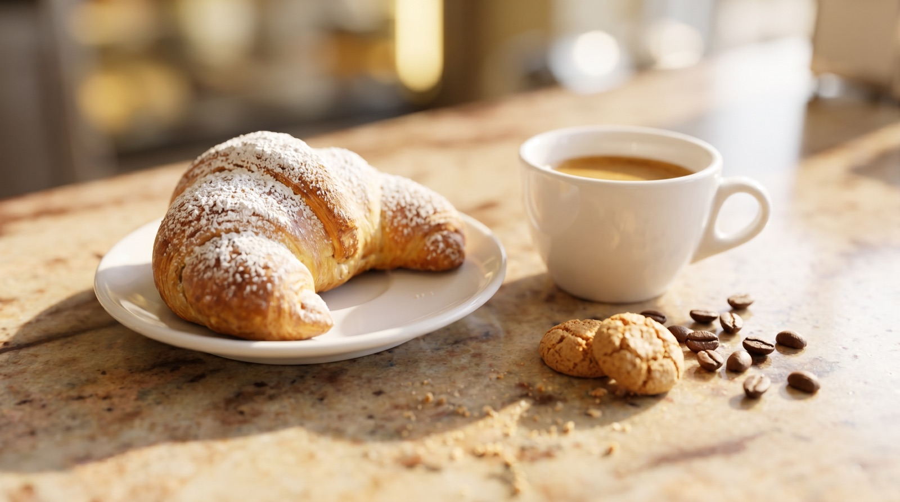

La torrefazione
Unsere Bohnen reisen nie weit. Sie werden von der Familienrösterei Basoni im Allgäu geröstet — ein kleiner Familienbetrieb seit 1998 — und jede Röstung, die wir ausschenken, gibt es direkt am Tresen zu kaufen, mit ehrlicher Beratung fürs Brühen zu Hause.

L'espresso
Gezogen auf die italienische Art: kurz, süß, ohne Eile. Wir stellen die Mühlen jeden Morgen neu ein und gießen unsere Milch mit Sorgfalt — ein Shot, der nicht stimmt, landet im Ausguss, nicht in Ihrer Tasse. Manche sagen, es sei der beste Kaffee zwischen München und Mailand. Wir nennen es einfach fatto bene.

La dolce vita
Ein Espresso im Stehen an der Bar, ein Cappuccino über einen langen Vormittag, ein Panino am Mittag, etwas Süßes um vier. Keine Eile, kein To-go-Zwang — die italienische Lebensart, zu Hause in Bayern.